Operating Documentation
Direction 5500113, Rev# 3
Discovery MR750 3.0T Service Methods
Module Version 6.0, Version Date 2/8/10
Operating Documentation |
| Required Persons | Preliminary Reqs | Procedure | Finalization |
|---|---|---|---|
| 2 | Included in Procedure | 4 hours | Included in Procedure |
A Teslameter Probe and Teslameter or a Probe Array and shimming software is used whenever measuring, monitoring, or mapping the strength of the magnet's magnetic field.
Use a single Teslameter Probe accurately positioned at the magnet's isocenter whenever measuring the magnet's overall magnetic field strength.
Use a Probe Array to map the magnet's magnetic field strength at a large number of angles within a spherical volume during magnet shimming.
Refer to this procedure to set up a Teslameter, single Teslameter Probe (used both with and without Universal Field Mapping Fixture 5266042 as appropriate), Probe Array (always mounted to Universal Field Mapping Fixture 5266042), and Universal Field Mapping Fixture 5266042, as well as to gain access to the LCC300's passive shim trays.
| NOTE: | If Universal Field Mapping Fixture 5266042 is available, install it in conformance with Preparations for Field Mapping, Preparation for Field Mapping, before ramping the magnet to field. The mapping fixture includes a single probe mounting board for use during ramping. Both the mapping fixture and LCC300 Shim Camera Kit 2386028 are required for shimming. |
Included in this procedure:
Preparations for Field Monitoring, Preparation for Field Monitoring, to set up for single-point field measuring/monitoring of overall magnetic field strength,
Preparations for Field Mapping, Preparation for Field Mapping, to assemble and install Universal Field Mapping Fixture 5266042 with either a Probe Array (for field mapping) or the Single Probe Mounting Board (for field strength measurement and polarity checks) and to gain access to the LCC300's shim trays for Passive Shimming,
Teslameter Adjustment and Resynchronization, Teslameter Adjustment and Resynchronization, to set up and re-synchronize the Teslameter and Teslameter Probe or Probe Array whenever they are used, and
After Field Mapping, After Field Mapping, to uninstall and disassemble Universal Field Mapping Fixture 5266042, and return the Gradient and End Bell to operating configuration after Field Mapping and Passive Shimming.
| Item | Qty | Effectivity | Part# | Manufacturer | |
|---|---|---|---|---|---|
| Brass Master Padlock with Brass Shackle | 1 | - | 46-194427P320 | - | |
| Brass Master Transition Padlock | 1 | - | 2387081 | - | |
| Black & White on Red Lockout Tag | 1 pkg. of 25 | - | 46-194427P322 | - | |
| Transition LOTO Tag | 1 | - | 46-194427P313 | - | |
| Line Cord Plug Cover, Plugs ≤3 in. (76 mm) wide x ≤5.875 in. (149 mm) long, Cords ≤1.25 in. (31 mm) diameter | 1 | - | 46-194427P321 | - | |
| Universal Field Mapping Fixture | 1 | - | 5266042 | - | |
| LCC300 Shim Camera Kit | 1 kit | - | 2386028 | - | |
| MetroLab Teslameter Kit or equivalent magnetic field measuring device | 1 | - | 46-251865G5 | - | |
| No. 6 MetroLab Probe (included in MetroLab Teslameter Kit 46-251865G5) | 1 | - | 2295525-5 | - | |
| Digital Voltmeter (DVM), Volt-Ohm Meter (VOM), or a noncontact voltage tester | 1 | - | - | - | |
| Oscilloscope (optional) | 1 | - | - | - | |
| Cardboard Box or nonferromagnetic frame (only for use when single Probe measurements of field strength are to be made without use of the mapping fixture) | 1 | - | - | - | |
| Nonferromagnetic Tape Measure, 6 ft. (1 m) long, minimum | 1 | - | - | - | |
| Stopwatch or other timer | 1 | - | - | - | |
| Titanium Tool Kit: Basic Set 5113258, Installation Set 5112581, or other nonferromagnetic tools (magnets with magnetic fields >1.5T) | 1 kit | - | 5113258 or 5112581 | - | |
| Service Methods documentation for the magnet/enclosures (available through the Common Documentation Library at gehealthcare.com or your local GE Healthcare Service Representative) | 1 | - | - | - | |
| Item | Qty | Effectivity | Part# | Manufacturer |
|---|---|---|---|---|
| Felt-Tip Marker | 1 | - | - | - |
| Isopropyl Alcohol | 1 bottle | - | - | - |
| Vacuum Grease | 1 | - | 46-252065P24 | - |
| Masking or Duct Tape | 1 roll | - | - | - |
| Cable Tie-Wraps | 10 minimum | - | - | - |
| ||||
| Potential Projectile Hazard! | ||||
| Ferromagnetic objects in a strong magnetic field can become dangerous projectiles. | ||||
| Never bring ferromagnetic material into the magnet room. Make sure all equipment and tools used in the magnet room are nonferromagnetic. |
| ||||
| Electrical Shock Hazard! | ||||
| Contact with connectors leading to an energized Teslameter can cause electrical shock. | ||||
| Ensure the AC line is disconnected to the Teslameter when the Teslameter is needed. |
| Condition | Reference | Effectivity |
|---|---|---|
Removal of some magnet enclosure components may be required to complete the Preparations for Field Measurement procedure. Refer to the following document and the appropriate Service Methods documentation (available through the Common Documentation Library at gehealthcare.com or your local GE Healthcare Service Representative) before continuing if cover removal is required. | - | |
Clear the Magnet Bore to mount and operate the Field Mapping Fixture. | - | - |
When a measurement of overall magnetic field strength is required, only a Single Probe accurately placed at the isocenter of the magnet is necessary. If performing Field Mapping soon after field monitoring (and Universal Field Mapping Fixture 5266042 is available), set up for field mapping in conformance with Preparations for Field Mapping, Preparation for Field Mapping, before ramping and use the single probe mounting board of the mapping fixture during ramping.
| ||||
| Universal Field Mapping Fixture 5266042 and LCC300 Shim Camera Kit 2386028 are required for Shimming. | ||||
| NOTE: |
Mount a No. 6 Teslameter Probe horizontally on a cardboard box or nonferromagnetic frame as shown below.
Illustration 1: Teslameter Probe Set-Up for Field Monitoring
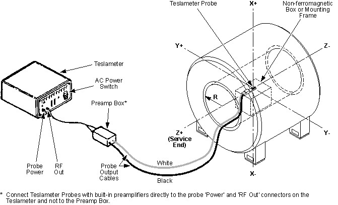
Position the box or frame along the Z axis of the magnet, half way between the Patient and Service ends of the bore.
Using measurements, check that the Probe is centered on the X, Y, and Z axes of the magnet.
| ||||
| Electrical Shock Hazard! | ||||
| Contact with connectors leading to an energized Teslameter can cause electrical shock. | ||||
| Ensure the AC line is disconnected to the Teslameter when the Teslameter is needed. |
Ensure the input power to the Teslameter is disconnected. Use a DVM (or equivalent measuring device) to make sure no voltage is present.
Connect the Probe to the Teslameter and set up the Teslameter in conformance with Teslameter Adjustment and Resynchronization, Teslameter Adjustment and Resynchronization.
| ||||
| Potential Projectile Hazard! | ||||
| Ferromagnetic objects in a strong magnetic field can become dangerous projectiles. | ||||
| Only use nonferromagnetic tools and equipment when working in the magnet's 3.0T magnetic field. |
Undock the Patient Cradle/Table from the magnet dock, and store so access is not restricted to the magnet or entrance to the Magnet Room.
Remove and set aside the split bridge in conformance with the procedure in the Service Methods documentation for the magnet/system/enclosures. Store the bridge in an area so access is not restricted to the magnet or entrance to the Magnet Room.
Remove the Front End Bell in conformance with the procedure in the Service Methods documentation for the magnet/system/enclosures.
The basic components of the Universal Field Mapping Fixture 5266042 are shown below.
Illustration 2: Universal Field Mapping Fixture 5266042 Components
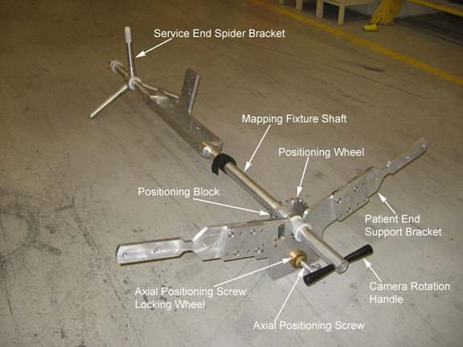
| ||||
| Potential Projectile Hazard! | ||||
| Ferromagnetic objects in a strong magnetic field can become dangerous projectiles. | ||||
| Only use nonferromagnetic tools and equipment when working in the 3.0T magnetic field of the magnet. |
Attach the service end spider bracket to the mapping fixture shaft (shown below and in Illustration 2.
Illustration 3: Attaching Service End Spider Bracket
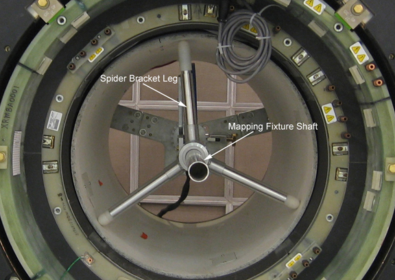
Extend the upper leg fully to meet the RF Coil as shown below.
Illustration 4: Extend Upper Spider Bracket Leg
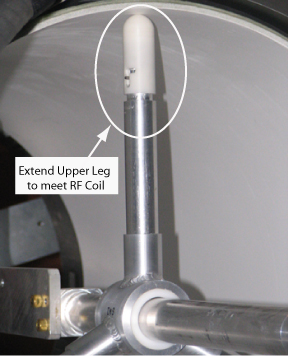
Attach the mapping fixture's patient end support bracket to the magnet interface ring at the first bolt holes above magnet center on either side of the magnet, using two shorter thumb screws.
Illustration 5: Attaching Patient End Support Frame
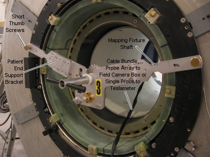
| ||||
| Make sure all fasteners along the mapping fixture shaft and at the support frame are sufficiently tight to prevent probe/array misalignment. | ||||
Attach the Probe Array of the mapping fixture or single probe mounting board inside the slot in the sensor support frame of the shaft.
Illustration 6: Attaching Probe Array to Mapping Fixture Shaft
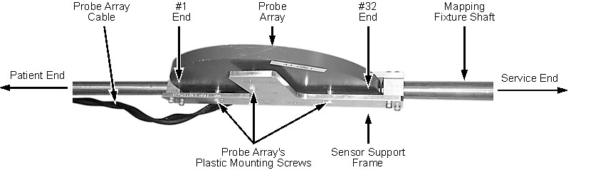
For field mapping while running ShimTool, attach the Probe Array using the plastic screws of the array.
For checking field stability, make sure it is in conformance with the Field Stability Check subsection of Shimming while the mapping fixture is installed.
Slide a No. 6 Probe into the single probe mounting board's slot labelled Axial Even to the end of the slot.
Ensure the Probe is snug, but not tight in the slot.
Attach the Probe Retainer as shown below, but do not overtighten.
Illustration 7: Mounting No. 6 Probe to Single Probe Mounting Board
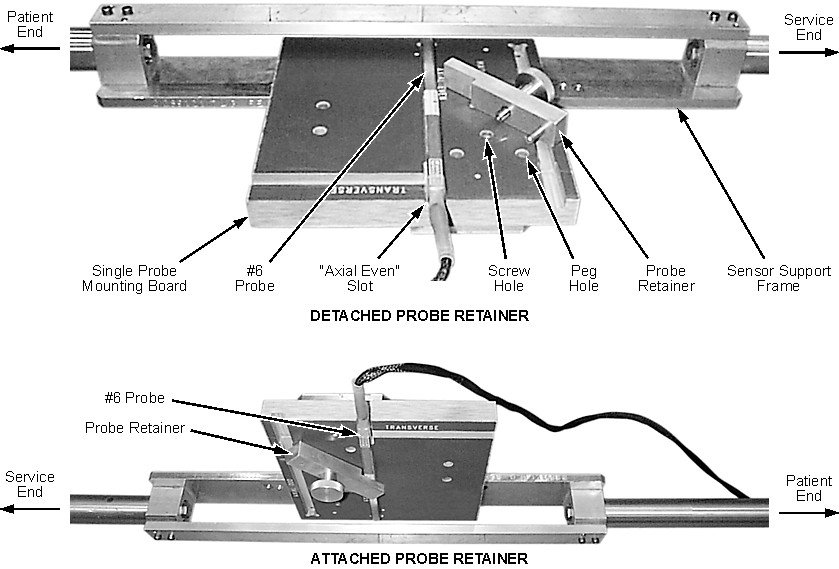
Attach the single probe mounting board to the sensor support frame of the mapping fixture shaft using the thumb screws of the board.
Illustration 8: Attaching Single Probe Mounting Board to Mapping Fixture
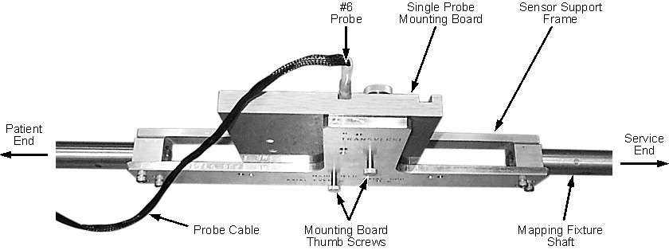
Mount the shaft of the mapping fixture onto the support brackets, and run the cable bundle under the patient end support bracket. (See Illustration 5.) Ensure the shaft of the mapping fixture is in the groove marked LCC (shown below) to minimize axial adjustments when centering the camera.
Illustration 9: Mounting Mapping Fixture Shaft at Patient End
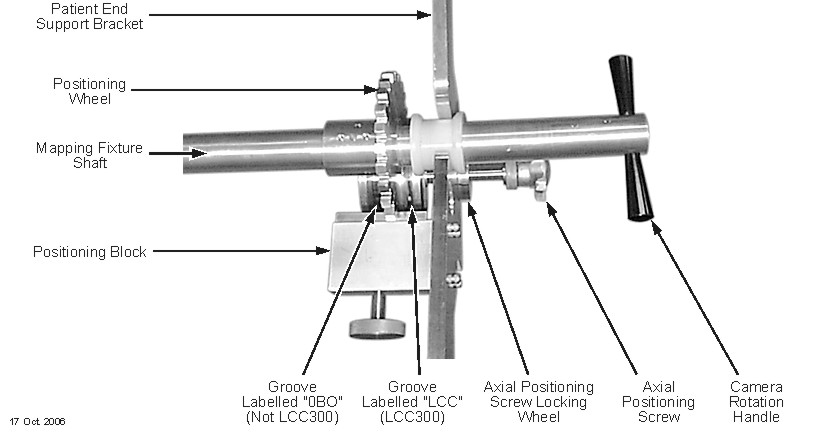
Center the Probe Array (or mounting board) in the bore of the magnet by placing the end of the sensor support frame of the shaft 22.56 in., ±0.13 in. (573 mm, ±3.0 mm) from the inside surface of the patient end support bracket.
| NOTE: | An initial Field Map is required before further axially centering the Probe Array within the warm bore. |
Illustration 10: Mechanically Centering Mapping Fixture
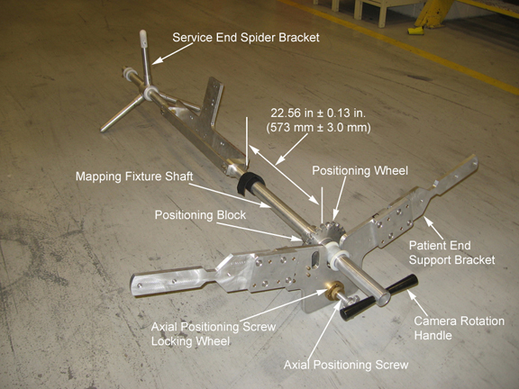
Adjust the Probe Array (or single probe mounting board) to vertical with the positioning block in the zero location of the positioning wheel as shown.
Illustration 11: Setting Probe Array or Single Probe Mounting Board to Vertical
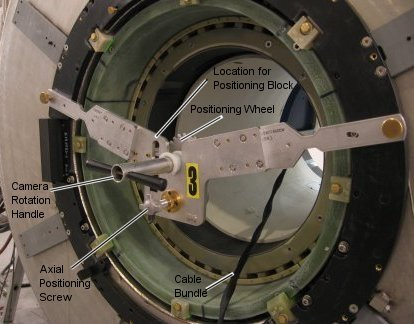
Run the cable from the Probe Array (or No. 6 Probe) out the patient end of the magnet.
| ||||
| Electrical Shock Hazard! | ||||
| Contact with connectors leading to an energized Teslameter can cause electrical shock. | ||||
| Ensure the AC line is disconnected to the Teslameter when the Teslameter is needed. |
Ensure the input power to the Teslameter is disconnected. Use a DVM (or equivalent measuring device) to check that no voltage is present.
Connect the cables:
If setting up for full Field Mapping, connect the field camera cabling as shown below (cable from A to A, etc.)
Illustration 12: Field Camera Cabling
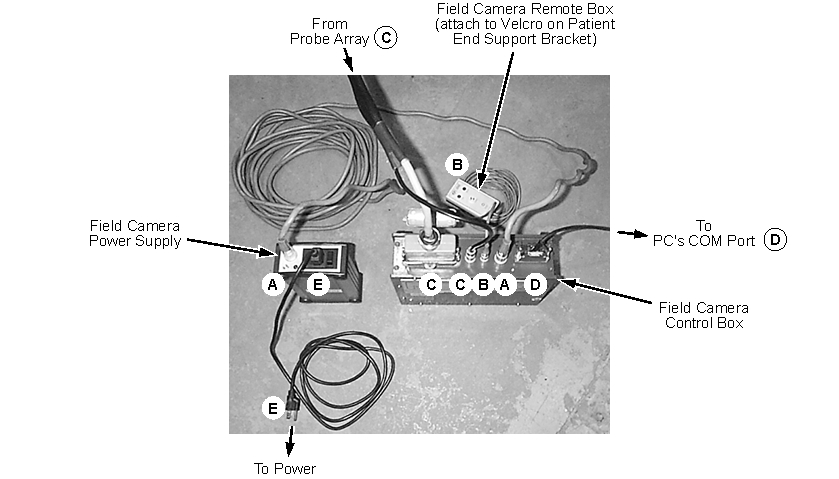
If setting up to check Field Stability prior to Shimming (Field Stability Check subsection of Shimming) using the single probe field measurement, connect the cable from the No. 6 Probe in the single probe mounting board to a Teslameter and set up the Teslameter in conformance with Teslameter Adjustment and Resynchronization, Teslameter Adjustment and Resynchronization.
Place the Field Camera Remote Box on the Velcro® strip of the patient end support bracket. (See Illustration 11.)
Turn on power to the field camera at the Field Camera Power Supply.
| ||||
| Electrical Shock Hazard! | ||||
| Contact with connectors leading to an energized Teslameter can cause electrical shock. | ||||
| Ensure the AC line is disconnected to the Teslameter when the Teslameter is needed. |
Ensure the input power to the Teslameter is disconnected. Use a DVM (or equivalent measuring device) to check that no voltage is present.
| ||||
| Potential Projectile Hazard! | ||||
| Ferromagnetic objects in a strong magnetic field can become dangerous projectiles. | ||||
| Only use nonferromagnetic tools and equipment when working in the magnet's 3.0T magnetic field. |
Connect the white wire from the Preamp Box to the left input jack of the Teslameter Probe and the black wire from the Preamp Box to the right, facing the connector end of the Probe.
Illustration 13: Teslameter Interconnections
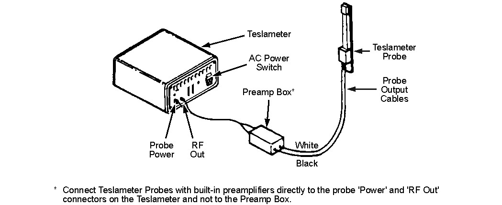
Connect the Preamp Box to the two-probe connection input plug on the Teslameter.
Use R = 0 and Z = 0 measurements to check that the Teslameter Probe is at the physical center of the magnet bore.
Turn on the AC power to the Teslameter as shown below.
Illustration 14: Teslameter Front and Back Views
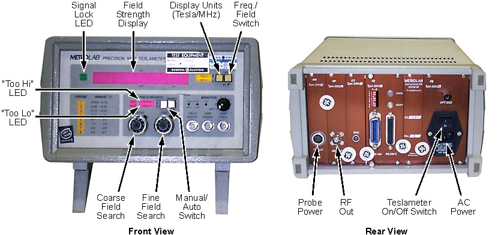
| ||||
| If the Manual/Auto Switch is not in its Manual position when magnetic field search begins during ramping, its sweep is in the ±1 Tesla range, and the system could lock on to the mechanical oscillation harmonic of the Shield Cooler Coldhead resulting in an erroneous reading. | ||||
Place the Manual/Auto Switch in the Manual position.
Set the Coarse and Fine Field Search controls fully counterclockwise (CCW) .
Set the Freq./Field Switch to the Field position.
| NOTE: |
|
Once ramping is started, monitor the Current Meter of the Power Supply until an indication of ≈120 amps is approached, then start monitoring the Teslameter.
As the developing magnetic field approaches the lower limit of the Teslameter probe (No. 6 Probe: ≈1.0 Tesla), the Strobe Lock LED starts blinking. When this LED goes out, reposition the Manual/Auto Switch to the Lock position. (See Illustration 14.)
| NOTE: | If the signal does not lock in, reposition the Probe Modulation Switch. |
As magnetic field continues to increase, the HI LED, located above the Coarse Field Search control, illuminates. Turn the Coarse Field Search control clockwise (CW) until the LED goes out.
As the magnetic field increases, the resonant frequency of the probe sample increases above the range setting of the Teslameter. Periodically increase the setting of the Coarse Field Search control to keep the Teslameter locked on the probe sample.
| NOTE: | The Fine Field Search control does not function when the Manual/Auto Switch is in the Locked position. |
Increase the Coarse Field Search control setting until a magnetic field reading of ≈3.0 Tesla is obtained. This should occur near, but slightly below, the actual magnetic field.
Slowly start increasing the Fine Field Search control. When the Strobe Lock LED stops blinking and remains out, reposition the Manual/Auto Switch to the Locked position.
| NOTE: | If the signal does not lock on, reposition the Probe Modulation Switch. |
Once the Teslameter is locked onto the magnetic field, either the LO or HI LED illuminates. Turn the Coarse Field Search control CCW if the LO LED is lit or CW if the HI LED is lit. (Slowly the illuminated LED goes out and stays out.)
As the magnetic field decreases, the resonant frequency of the probe sample decreases below the range setting of the Teslameter. Periodically decrease the Coarse Field Search control to keep the Teslameter locked on the probe sample.
| NOTE: | The Fine Field Search control does not function when the Manual/Auto Switch is in the Locked position. |
If the Teslameter should go out of sync while ramping the magnet up (or down), it can easily be resynchronized as follows:
Manual Resynchronization
Reposition the Manual/Auto Switch to Manual.
| NOTE: | The Strobe Lock LED is on and both the LO and HI LEDs oscillate, indicating a search mode. |
Read the Current Meter of the Main Power Supply, multiply the present current of the meter reading by 20 gauss (since there is ≈20 gauss/amp), and reset the Current Meter to this calculated value.
Slowly start increasing (if ramping up) the Coarse and/or Fine Field Search control while monitoring the Strobe Lock LED.
Once the Strobe Lock LED goes off, quickly place the Manual/Auto Switch to the Locked position. (The meter is now synchronized.)
| NOTE: | If the HI LED illuminates, turn the Coarse Field Search control CW until the LED goes off. Repeat this adjustment as required until the parking field is reached. |
Manual Resynchronization Using an Oscilloscope
| NOTE: | Set up an oscilloscope near the Teslameter to display and trigger on the Field Modulation signal from a jack on the front panel of the Teslameter. Adjust the time base to display one or two ramp waveforms. On the second channel, display the NMR Signal from the front panel of the Teslameter. |
Leave the Manual/Auto Switch of the Teslameter in the Locked position.
Slowly turn the Coarse Field Search control in the direction the magnetic field is going. For example, if the magnetic field is increasing, turn the control towards the higher numbers; if the magnetic field is decreasing, turn the control towards the lower numbers).
| NOTE: | As the meter is approaching the actual magnetic field, the baseline of the FID display starts to wander. Once the meter is in range of the magnetic field, the FID appears on the scope trace as the meter locks on. |
When locked on, the Strobe Lock LED does not illuminate. Slightly readjust the Coarse Field Search control CCW if the LO LED illuminates, or CW if the HI LED illuminates until the illuminated LED ceases to illuminate.
Maintain tracking through end of ramp sequence.
| ||||
| Potential Projectile Hazard! | ||||
| Ferromagnetic objects in a strong magnetic field can become dangerous projectiles. | ||||
| Only use non magnetic tools and equipment when working in the 3.0T field of the magnet. |
Turn off the power to the field camera at the Field Camera Power Supply.
| ||||
| Electrical Shock Hazard! | ||||
| Contact with connectors leading to an energized field camera can cause electrical shock. | ||||
| Ensure the AC line is disconnected to the field camera when the field camera is needed. |
Ensure the input power to the field camera is disconnected. Use a DVM (or equivalent measuring device) to check that no voltage is present.
Disconnect the cables shown in Illustration 12.
Dismount the shaft of the mapping fixture from the support brackets. (See Illustration 5.) Remove the shaft from the bore of the magnet.
Dismount the Probe Array (Illustration 6) or the No. 6 Probe and Single Probe Mounting Board (Illustration 7 and Illustration 8) from the shaft of the mapping fixture.
Dismount the patient end support bracket of the mapping fixture. (See Illustration 5.)
Dismount the service end support bracket of the mapping fixture. (See Illustration 3 and Illustration 2.)
Reinstall the two trim cover cap screws previously removed from the service end bell.
No finalization steps.